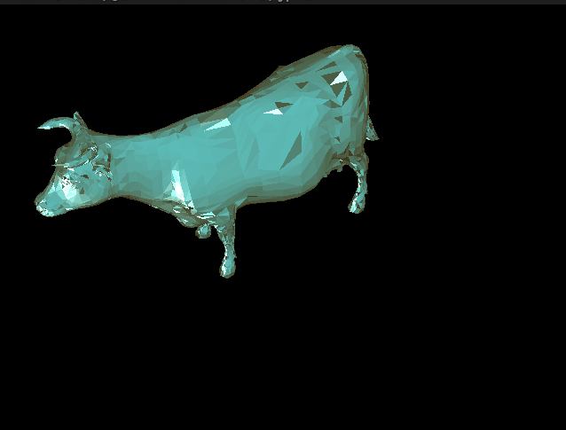

CPSC478 Assignment 5 — Rasterizer
Switch to: Interactive Renderer
that all images in this writeup were generated directly by my solution code or provided by the course staff (exception: art contest submissions may pass through intermediary software like GIMP)
that no other student has viewed my writeup explanations or my writeup images
that my solution code is my own work; particularly that my solution was not copied from any other student's solution code, and that no other student copied their solution directly code from me
that I did not discuss assignment specifics or view the solution code of any other student besides that of my (optional) partner
that I have followed all other course collaboration and course plagiarism policies as written on the course website.
Jarred Parr (jp2844), Enoch Omale (eo329)
Features Implemented:
- (2.0) Perspective Projection
- (1.0) Phong Reflection Model
- (1.0) Bounding Box
- (1.0) Barycentric Coordinates
- (2.0) Flat Shader
- (2.0) Gouraud Shader
- (2.0) Phong Shader
- (2.0) Diffuse and Specular Mapping
- (2.0) XYZ Normal Mapping
- (0.5) Optimization Contest
Perspective Projection
The implementation is very similar to the naive orthogonal projection given. This time we first multiply the vertex by a viewing matrix and then divide through by w (the fourth homogeneous coordiate). Then we take the new xyz values as our coordinate.
Camera=[2.8646,2.2455,1.5975];[0.47999,-0.82485,0.29873];[0,0,0]&Mesh=cube.obj;false&Resolution=320x240&Shading_Model=Wire&Ambient=[0,0,0]&Diffuse=[255,255,255]&Specular=[255,255,255]&Shininess=5
Phong Reflection Model
We calculate the viewing direction as the position from the light to the vertex. being coloured. this is also reflected in the normal. the rest of the variables are given by the phong material, and are simply subbed into the equation for phong reflecttion.
Bounding Box
we compute the min and max x and y values for a triangle by looping through the three verts and updating our min and max values.
Barycentric Coordinates
assuming at first that the point is inside the triangle we compute the areas of the triangles formed with the point and each side as a fraction of the whole triangles area. these fractions are then tested (should all be between 0 and 1 and sum to 1) to see if the point is actually inside the triangle. The fractional areas are our barycentric coordinates.
Flat Shader
The flat shader was implemented by first calculating the centroid of the face and the average normal of the
face so that way the lighting and color calculations were with respect to the same location. From here, we
implemented the phong color checking algorithm to calculate the color of the face. The color of the face was
then uniformly set to the color of the pixel.
Camera=[-3.7257,4.6729,1.6024];[-0.62123,-0.64694,0.4422];[0,0,0]&Mesh=cow.obj;false&Resolution=640x480&Shading_Model=Flat&Ambient=#483c14&Diffuse=#2d87ac&Specular=#a2c9d2&Shininess=5

Gouraud Shader
For each triangle, Gouraud shading uses the phong reflection model to calculate colours at each of the three vertices. then while rasterizing, we use the barycentric coordinates of the pixels to interpolate the colour at each pixel.
Camera=[-3.7257,4.6729,1.6024];[-0.62123,-0.64694,0.4422];[0,0,0]&Mesh=cow.obj;false&Resolution=640x480&Shading_Model=Gouraud&Ambient=#483c14&Diffuse=#2d87ac&Specular=#a2c9d2&Shininess=5
Phong Shader
Similar to gouraud shading, with a twist. for each triangle we loop through the pixels to colour with barycentric coordinates and use these coordinates to intermpolate the normals of the triangles vertices. we feed this normal into the phong reflection model. so we calculate a new colour for every pixel now rather than just interpolating between three.
Camera=[-3.7257,4.6729,1.6024];[-0.62123,-0.64694,0.4422];[0,0,0]&Mesh=cow.obj;false&Resolution=640x480&Shading_Model=Phong&Ambient=#483c14&Diffuse=#2d87ac&Specular=#a2c9d2&Shininess=5
Diffuse and Specular Mapping
Since diffuse and specular maps exist inside of images, we needed a way to compute them with respect to the
normalized uv coordinates with respect to the triangle we were working with. To do this, we first calculated
the barycentric coordinates of the point we were working with. We then used these coordinates to calculate
the uv coordinates of the point. We then used these uv coordinates to calculate the color of the point. We
then used the uv coordinates to obtain the color from the diffuse and specular maps which gave us our final
image.
Camera=[-1.1618,1.5919,2.0102];[-0.35231,-0.82205,0.44734];[0,0,0]&Mesh=boggiebody.obj;true&Mesh=boggieeyes.obj;true&Mesh=boggiehead.obj;true&Resolution=640x480&Shading_Model=Phong&Ambient=#483c14&Diffuse=#2d87ac&Specular=#a2c9d2&Shininess=5
XYZ Normal Mapping
XYZ normal mapping followed almost the exact same approach as diffuse and specular mapping. The only
difference was that we used the normal map to calculate the normal of the point instead of the average
normal over the vertices of the face. We also, as instructed, only implemented this in the phong shader. We
added safeguards to prevent meshes that do not have the xyz normal map available from crashing the program.
Camera=[0.24217,-1.1267,1.6445];[0.10907,-0.81248,-0.5727];[0,0,0]&Mesh=afrhead.obj;true&Mesh=afreye.obj;true&Resolution=800x600&Shading_Model=Phong&Ambient=[0,0,0]&Diffuse=[255,255,255]&Specular=[255,255,255]&Shininess=5
Optimization Contest
NA